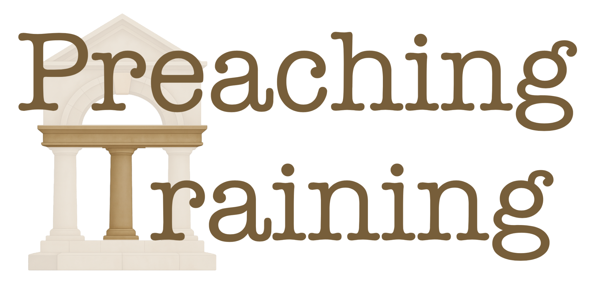
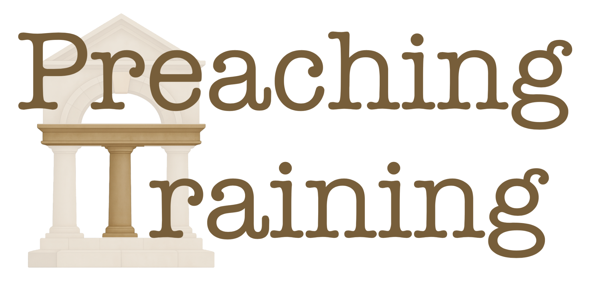

The Five Step Framework
Build your sermon from the ground up:
- 1. Foundation: Enter the text's world (historical, literary context)
- 2. Cornerstone: Consider Jesus - how would He approach this topic?
- 3. Three Pillars: Your main supporting points that flow naturally from the text
- 4. Keystone: Christ connects and unifies all three pillars
- 5. Capstone: Brings everything together in unity and conclusion
1
Foundation - Enter the Text's World
Like the solid base of a classical structure, gather the foundational pieces by exploring the context of the Bible passage, including its literary, historical, and emotional aspects.
2
Cornerstone - Consider Jesus
Like the cornerstone that determines the entire building's orientation, before crafting your sermon structure, ask: "How would Jesus approach this topic? What does the Gospel say about this?"
3
Pillars - 3 Supporting Points
Like the three classical columns that support the entablature, build 3 key sections that align with the text's natural flow, designed to connect with your congregation.
4
Keystone - The Christ Connection
Like the keystone at the apex of the arch that locks all the voussoirs in place, identify where Jesus anchors the text. Show how Christ is the key that holds all three pillars together.
5
Capstone - Bring It All Together
Like the pediment that crowns the entire structure, create unity in your conclusion, helping people see how all elements work together to form one complete, beautiful message.
John Piper: Expository Exultation
"Preaching is the heralding of God's Word with a passion for God's glory."
The Four Pillars:
- Expository: Rooted in God's Word, not the preacher's ideas. Authority comes from faithfully unfolding Scripture.
- Exultation: Not cold explanation but worship. The preacher must feel and rejoice in the truth.
- The Goal: The glory of God. Magnifying God's supremacy and displaying His majesty in Christ.
- Head, Hearts, and Hands Together: Truth, Passion, and Action - all three must be present.
Tony Merida: Seven Qualities of Great Preaching
- Love for the Word and Christ: Let the Word transform the preacher first
- Love for people: Pastoral warmth and genuine compassion
- Gifts of the Spirit: Being faithful to what God has given
- Practice of Progress: Through suffering, dependence, repentance, and forgiveness
- Mentorship and Models: Learning from others to develop
- Training and Experience: Remaining learners as teachers
- Holiness and Prayer: Personal character anchoring ministry effectiveness
Preaching Insights: Practical Wisdom
- Preach because I have something to say, not because I have to say something
- Live sermons are most people's regular Bible Study
- Preaching needs to be about people learning, not just a preacher teaching
- Pray before you write. Pray before you preach. Saturate with prayer
- 30 minutes is a good amount of time for a sermon
- The preacher's passion is the bridge that helps people care about the passage
Time Management
- Introduction: 3-5 minutes
- Each Pillar: 6-8 minutes
- Christ Connection: 3-5 minutes
- Conclusion: 3-5 minutes
- Total: ~30 minutes
Sermon Building Progress
0% Complete - Ready to begin